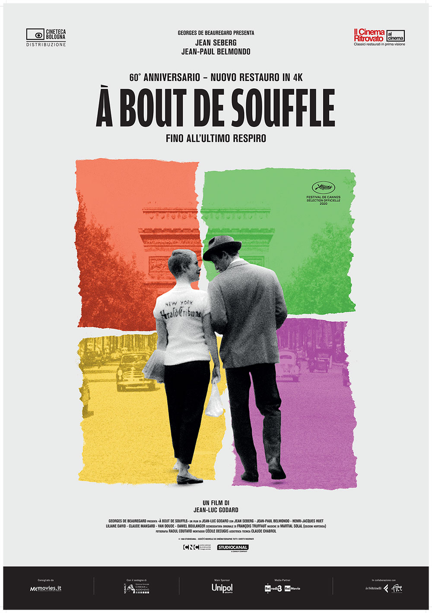

1
Nascita di una nazione
Voto:8
Nel periodo compreso tra la nascita ufficiale del Cinema e il primo decennio del ventesimo secolo, tutti i film che venivano proiettati nelle sale non erano dotati di un linguaggio cinematografico vero e proprio. Nascita di una nazione è considerato come il primo vero film narrativo della Storia del Cinema, all’interno del quale, cioè, il mero racconto degli eventi ha per la prima volta la precedenza su tutto.
Innovativo

2
Quarto Potere
Voto:9
Il film di Orson Welles ha cambiato il Cinema e per una serie di ragioni: da una parte per il modo rivoluzionario per l’epoca con cui venne ideato e prodotto. Quarto Potere viene infatti ricordato per essere stato il primo film in assoluto in cui venne concessa piena libertà artistica nelle mani di una singola persona, dall’altra, si assiste a una vera e propria rivoluzione tecnica: viene infatti qui ripreso e perfezionato il metodo della profondità di campo.
Rivoluzionario

3
Roma Città Aperta
Voto:8
Con Roma città aperta,capolavoro di Roberto Rossellini, si esce dagli studi e si arriva nelle strade, nelle piazze, nelle campagne; non quelle ricostruite dalle grandi produzioni hollywoodiane, ma quelle reali, della vita di tutti i giorni. Cambiando lo scenario, cambia anche l’interprete del film: non più il divo dalla faccia pulita, perfetto e orgoglioso nel proprio fascino immortale, ma l’uomo comune, l’individuo qualunque finalmente libero da ogni tipo di cliché.
D'avanguardia

4
Fino all'ultimo respiro
Voto:7.5
Con Fino all’ultimo respiro,vengono ufficialmente delineati i contorni del Cinema europeo moderno. Fino all’ultimo respiro, contraddice in ogni singolo aspetto tutto ciò a cui lo spettatore era stato abituato fino a quel momento: dalla trama scarna e in certi casi improvvisata alla direzione degli attori, dai movimenti di macchina.
Artistico
5
Pulp Fiction
Voto:10
Con Pulp Fiction, Tarantino da vita a un’opera pulp, citazionista ed eccessiva sotto ogni aspetto, che mescola tra loro elementi apparentemente gli antipodi: il gusto del racconto tipico del cinema classico (riprodotto però in una versione per eccesso) con la sperimentazione del moderno.
Sperimentale